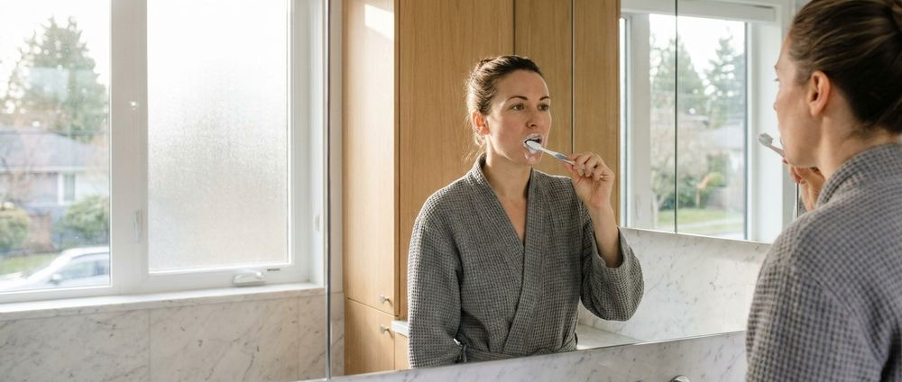

5 Surprising Ways Your Morning Routine Secretly Damages Teeth
Dental Care Tips · Patient Education · Preventive Care

We often consider our morning routines to be the foundation of a productive day. Many professionals meticulously plan their early hours to maximize efficiency and personal well-being. We wake up, hydrate, consume our preferred caffeinated beverages, and perform our grooming rituals with practiced precision. A closer examination of these daily sequences reveals hidden vulnerabilities. Certain ingrained actions quietly undermine our structural dental integrity over time. The habits we perform on autopilot require a deeper level of professional scrutiny.
The intersection of dietary choices and hygiene timing plays a significant role in long-term dental stability. We frequently observe patients unknowingly compromising their teeth through seemingly healthy morning practices. The sequence in which we consume acidic beverages and brush our teeth dictates the chemical environment of the mouth. Misaligning these steps creates a perfect storm for microscopic structural degradation. Proper oral health habits require more than just regular brushing and flossing. They demand a strategic understanding of timing, product selection, and mechanical technique.
We have identified several common morning rituals that inadvertently cause damage to tooth structures. This damage accumulates slowly over thousands of mornings. It often goes unnoticed by the patient until significant clinical intervention becomes necessary. By analyzing these subtle missteps, we can recalibrate our morning routines to prioritize long-term dental preservation. Our clinical observations at Fourth Avenue Dental Clinic indicate that minor adjustments yield substantial preventative benefits. We will explore five specific ways your morning routine might be secretly damaging your teeth and outline professional strategies to correct them.
The Perils of Immediate Post-Coffee Brushing
Many individuals instinctively reach for their toothbrush immediately after finishing their morning coffee. We understand the desire to remove coffee breath before heading into a professional workplace environment. This immediate brushing sequence represents a significant threat to long-term dental integrity. Coffee is an inherently acidic beverage. This acidity temporarily softens the outer protective layer of your teeth. The chemical structure of the tooth surface becomes highly vulnerable during this specific window of time.
When we brush teeth while they are in this acid-softened state, we are not just removing bacterial plaque. We are actively brushing away microscopic layers of the tooth structure itself. The mechanical action of the bristles acts as an abrasive force against the chemically weakened surface. Over time, this daily habit leads to noticeable thinning and significantly increased sensitivity. Enamel protection relies heavily on allowing the mouth to naturally neutralize these dietary acids before applying any mechanical friction.
We strongly recommend a strategic delay in your morning hygiene sequence. Saliva acts as the primary natural defense mechanism against dietary acid attacks. It requires approximately thirty to sixty minutes to buffer the acidic environment created by coffee or citrus juices. Saliva actively redeposits essential minerals like calcium and phosphate back into the tooth structure during this waiting period. This natural remineralization process hardens the surface and prepares it for safe, effective brushing.
If waiting an hour is not feasible within your morning schedule, we advise altering the sequence entirely. Brushing your teeth before consuming your morning coffee offers a highly effective alternative. This pre-brushing strategy removes the sticky plaque biofilm that acids typically cling to. You can simply rinse your mouth thoroughly with plain water after finishing your beverage to freshen your breath. This simple adjustment preserves your protective dental layers while easily accommodating a fast-paced morning routine.
The Hidden Dangers of Abrasive Whitening Pastes
The pursuit of a bright professional smile often leads individuals to select heavily marketed whitening toothpastes. We frequently see patients incorporating charcoal-based or highly abrasive pastes into their daily morning routines. These products promise rapid stain removal and a dazzling aesthetic result. Unfortunately, the mechanism by which these pastes operate is fundamentally destructive to the tooth surface. They rely on coarse, jagged particles to physically scrub away superficial surface stains.
Daily use of these abrasive compounds is equivalent to taking fine sandpaper to your teeth every single morning. The outer layer of the tooth is a finite resource. It does not possess the biological ability to regenerate once it is lost. When we continuously scrub this surface with harsh abrasives, we accelerate the natural wear and tear process exponentially. This aggressive approach strips away the protective outer barrier. It eventually exposes the softer underlying dentin layer.
Exposing the dentin layer creates a paradoxical effect where the teeth appear darker and more yellow over time. Dentin is naturally yellow in color and absorbs new stains much faster than the hard outer surface. This structural loss significantly increases dentinal hypersensitivity. Patients often report sharp pain when consuming hot or cold beverages as a direct result of this abrasive wear. Preventative dentistry principles emphasize the preservation of natural tooth structure above aggressive cosmetic interventions.
We recommend utilizing non-abrasive, fluoride-rich toothpastes for your standard morning routine. These gentle formulations effectively remove plaque and bacteria without compromising the structural integrity of the tooth. If you desire a brighter smile, we advise seeking professional whitening treatments. Professional treatments utilize safe chemical agents to break down intrinsic stains without mechanically grinding away the surface. Protecting your teeth from daily abrasive damage is a fundamental component of sustainable oral health.
Prolonged Exposure Through Lemon Water Sipping
Starting the day with a glass of warm lemon water is a highly popular wellness trend. We recognize the systemic health benefits associated with hydration and vitamin C intake. This specific morning habit presents a severe localized threat to your dental structures. Lemons are highly acidic. They possess a pH level that rapidly dissolves tooth minerals on contact. The method of consumption often dictates the severity of the resulting dental damage.
Many individuals sip their lemon water slowly over an extended period while reviewing morning emails or commuting. This prolonged sipping behavior is highly detrimental to long-term oral stability. It bathes the teeth in a continuous wash of acidic fluid. The mouth never receives an adequate opportunity to recover and neutralize the dropping pH levels. Continuous acid exposure prevents saliva from performing its natural buffering and remineralizing duties.
We observe distinct patterns of acid erosion in patients who maintain this slow-sipping habit. The damage typically manifests on the inner surfaces of the upper teeth or directly along the gumline. The teeth begin to look translucent at the edges and become highly susceptible to chipping and fracturing. Implementing effective preventative strategies requires modifying how we consume these acidic wellness beverages. The primary goal is to minimize the total duration of the acid exposure.
We advise consuming acidic beverages quickly rather than sipping them over an extended timeframe. Utilizing a reusable straw can also help bypass the teeth entirely. A straw directs the acidic fluid straight toward the back of the mouth and away from vulnerable surfaces. Immediately following consumption, we recommend rinsing the mouth vigorously with plain water. This simple rinsing action dilutes the residual acids and accelerates the pH neutralization process.
The Destructive Force of Aggressive Brushing Techniques
Morning routines are often executed in a state of rushed urgency and divided attention. We frequently observe patients applying excessive mechanical force during their morning brushing sessions. There is a common misconception that harder brushing equates to cleaner teeth. This aggressive technique is a primary contributor to structural dental damage and soft tissue recession. The goal of brushing is to gently disrupt soft bacterial plaque. It is not to scrub the teeth like a hard household surface.
When we apply heavy pressure with a toothbrush, the bristles flex and drag harshly across the delicate gum tissue. This repeated daily trauma causes the gums to recede away from their natural, healthy position. Gum recession exposes the root surface of the tooth to the oral environment. The root surface is not protected by a hard outer layer. It is significantly softer and highly vulnerable to rapid decay and severe sensitivity.
Aggressive brushing also creates mechanical wear patterns directly on the teeth themselves. We frequently identify deep, V-shaped notches near the gumline in patients who utilize heavy-handed brushing techniques. These physical notches weaken the structural integrity of the tooth and often require restorative intervention to correct. Developing proper oral hygiene habits requires a conscious shift in brushing mechanics. We must prioritize gentle, deliberate movements over forceful scrubbing.
We strongly advocate for the use of soft-bristled or extra-soft-bristled toothbrushes exclusively. Electric toothbrushes equipped with built-in pressure sensors offer an excellent technological solution to this problem. These modern devices automatically alert the user or slow down the brush head when excessive force is applied. Holding the manual toothbrush with just two fingers can naturally reduce the amount of pressure exerted. Gentle, circular massage techniques at a forty-five-degree angle are highly effective at removing plaque while preserving soft tissues.
Skipping Pre-Hygiene Hydration
The state of your oral environment upon waking is drastically different from its state during the active day. Saliva production naturally decreases significantly while we sleep. This reduction results in a notably dry mouth environment by the time morning arrives. Many individuals proceed directly to brushing their teeth without first rehydrating their oral cavity. This lack of initial hydration creates an unfavorable and potentially damaging condition for mechanical cleaning.
Saliva is the most critical natural defense mechanism within the human mouth. It acts as a lubricant, an acid neutralizer, and a powerful remineralizing agent. When we brush in a dry environment, the friction between the bristles and the teeth is heavily amplified. The toothpaste lacks the necessary fluid to disperse evenly and activate its protective ingredients. This dry brushing scenario increases the micro-abrasive effects on the tooth surface.
A dry mouth allows acidic bacteria to thrive and multiply undisturbed overnight. These bacteria produce highly acidic byproducts that weaken the outer dental layers while you sleep. Brushing immediately without neutralizing this stagnant environment can exacerbate the surface damage. Preventative dentistry protocols emphasize the absolute necessity of a well-lubricated and pH-balanced oral cavity prior to any mechanical intervention. Hydration is an indispensable first step in a safe morning hygiene sequence.
We recommend drinking a full glass of plain water immediately upon waking. Swishing this water around the mouth helps to dislodge loose debris and stimulate the salivary glands. This simple action normalizes the pH levels in the mouth and provides the necessary lubrication for safe brushing. The water activates the fluoride in your toothpaste. This allows the protective minerals to coat the teeth effectively. Incorporating this brief hydration step into your routine provides a massive layer of protection for your daily dental care.
Maintaining optimal dental stability requires a highly strategic approach to our daily habits. The morning routines we execute on autopilot hold significant power over our long-term structural health. By identifying and modifying these subtle destructive behaviors, we can proactively protect our smiles from unnecessary wear. Simple adjustments in timing, product selection, and mechanical technique yield profound preventative benefits. We are fully committed to helping our community navigate these daily choices to ensure lasting dental integrity.
Evaluating your specific morning habits alongside a dental professional provides a clear roadmap for long-term improvement. We invite you to schedule a comprehensive assessment of your oral health practices with our experienced clinical team. A personalized evaluation allows us to identify any early signs of wear and customize a preventative strategy for your unique needs. Please reach out to us directly via email at appts@4thavenuedental.ca to arrange your private consultation. We look forward to partnering with you to establish a morning routine that actively preserves and protects your smile.
Ready to book a visit?
1905 West 4th Avenue, Kitsilano. Book online or call the clinic.